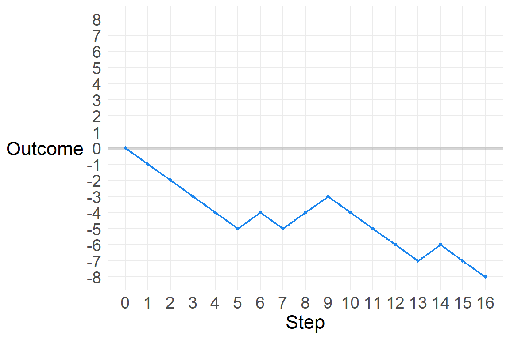

set.seed(5423)
a <- sample(c(-1,1), size=16, replace=T)
a [1] -1 -1 -1 -1 -1 1 -1 1 1 -1 -1 -1 -1 1 -1 -1Chapter 4 - Geocentric Models
Ptolemy used epicycles to construct a model of the motion of planets in our solar system in which the planets and sun revolved around the Earth - a geocentric model. It was very accurate and produced good predictions, though we know now that the underlying causal model is wrong.
Linear regression is the geocentric model of applied statistics. Regardless of the underlying data generating process, it assumes that the outcome of interest can be modeled as the additive combination of other measurements. Linear regression is a descriptive model of the world that works in a lot of cases, because the normal distribution is the additive combination of other measurements, and the normal distribution can be found quite often in the physical world.
This chapter introduces linear regression as a Bayesian procedure. Since Bayesian analysis requires a probability model, we use a normal distribution to benchmark our uncertainty about some outcome of interest. Once we learn linear regression and how it is expressed as a Bayesian procedure, we can move on to other forms of regression which are not so normal.
There are many ways to generate a normal distribution as a description of a real-world physical process. Let’s start with a sequence of steps. The steps are randomly generated, and can go either left (-1) or right (1). Let’s look at a sequence of 16 steps.
set.seed(5423)
a <- sample(c(-1,1), size=16, replace=T)
a [1] -1 -1 -1 -1 -1 1 -1 1 1 -1 -1 -1 -1 1 -1 -1Where does this path take us?
sum(a)[1] -8So we got 12 steps of -1 and 8 steps of 1, resulting in a position of -8 after 16 steps. Let’s see this.
p1 <- data.frame(Step=0:16,
path=1,
out=c(0,a)) %>%
mutate(Outcome=cumsum(out))
p1_gg <- ggplot(p1, aes(Step, Outcome)) +
# geom_segment(aes(y=0, yend=0, x=0, xend=16)) +
geom_hline(yintercept=0, size=1.4, color="grey60", alpha=.4) +
geom_point(color="dodgerblue2", size=1) +
geom_line(color="dodgerblue2", size=.75) +
scale_x_continuous(breaks=0:16) +
scale_y_continuous(limits=c(-8,8),
breaks=-8:8) +
# labs(y="Outcome",
# x="Step") +
theme(axis.title.y=element_text(angle=0, vjust=.5))
p1_gg
Let’s add another path.
d <- p1 %>%
bind_rows(p2)
str(d)'data.frame': 34 obs. of 4 variables:
$ Step : int 0 1 2 3 4 5 6 7 8 9 ...
$ path : num 1 1 1 1 1 1 1 1 1 1 ...
$ out : num 0 -1 -1 -1 -1 -1 1 -1 1 1 ...
$ Outcome: num 0 -1 -2 -3 -4 -5 -4 -5 -4 -3 ...ggplot(d, aes(Step, Outcome, color=as.factor(path))) +
geom_hline(yintercept=0, size=1.4, color="grey60", alpha=.4) +
# geom_point(size=3) +
geom_line(size=.75) +
scale_color_viridis_d(alpha=.6) +
scale_x_continuous(breaks=0:16) +
scale_y_continuous(limits=c(-8,8),
breaks=-8:8) +
theme(axis.title.y=element_text(angle=0, vjust=.5),
legend.position="none")Let’s add a third.
p3 <- data.frame(Step=0:16,
path=3,
out=c(0,sample(c(-1,1), size=16, replace=T))) %>%
mutate(Outcome=cumsum(out))
d <- d %>%
bind_rows(p3)
str(d)'data.frame': 51 obs. of 4 variables:
$ Step : int 0 1 2 3 4 5 6 7 8 9 ...
$ path : num 1 1 1 1 1 1 1 1 1 1 ...
$ out : num 0 -1 -1 -1 -1 -1 1 -1 1 1 ...
$ Outcome: num 0 -1 -2 -3 -4 -5 -4 -5 -4 -3 ...ggplot(d, aes(Step, Outcome, color=as.factor(path))) +
geom_hline(yintercept=0, size=1.4, color="grey60", alpha=.4) +
# geom_point(size=3) +
geom_line(size=.75) +
scale_color_viridis_d(alpha=.6) +
scale_x_continuous(breaks=0:16) +
scale_y_continuous(limits=c(-8,8),
breaks=-8:8) +
theme(axis.title.y=element_text(angle=0, vjust=.5),
legend.position="none")
Now let’s simulate this process a thousand times, though we’ll graph a random selection of 100 of those.
set.seed(432)
ot <- data.frame(replicate(1e3,
sample(c(-1,1), size=16, replace=T)))
#str(ot)
#head(ot)
#otL <- ot %>%
# pivot_longer(names_to="path",
# values_to="out")
otL <- ot %>%
t() %>%
as.data.frame()
ot2 <- otL %>%
pivot_longer(cols=1:16,
names_to="Step",
values_to="out") %>%
mutate(Step=as.numeric(str_sub(Step, 2, nchar(Step))),
path=rep(1:1000, each=16)) %>%
group_by(path) %>%
mutate(Outcome=cumsum(out)) %>%
ungroup()
tes <- data.frame(Step=rep(0,1000),
out=0,
path=1:1000,
Outcome=0)
#tes
d <- ot2 %>%
bind_rows(tes) %>%
arrange(path, Step) %>%
as.data.frame()
#str(d)
#str(ot2)path_samp <- sample(1:1000, size=100)
d_samp <- d %>%
filter(path %in% path_samp)
ggplot(d_samp, aes(Step, Outcome, color=as.factor(path))) +
geom_hline(yintercept=0, size=1.4, color="grey60", alpha=.4) +
# geom_point(size=3) +
geom_line(size=.25, position=position_jitter(width=.3, height=.3)) +
scale_color_viridis_d(alpha=.6) +
scale_x_continuous(limits=c(0,16),
breaks=0:16) +
scale_y_continuous(limits=c(-8,10),
breaks=-8:10) +
labs(caption="Lines jittered to\nmitigate overplotting",
title="100 paths of 16 random steps") +
theme(axis.title.y=element_text(angle=0, vjust=.5),
legend.position="none")Let’s look at the distribution of final scores.
fin <- d %>%
filter(Step==16)
#frq(fin$Outcome)
ggplot(fin, aes(Outcome)) +
geom_bar(width=.5,
color="blue",
fill="dodgerblue2") +
theme(axis.text.y=element_blank()) +
labs(x="",
y="",
title="Distribution of final outcomes of 16 random steps") +
scale_x_continuous(limits=c(-12,12),
breaks=seq(-12,12, 2))
That looks a lot like a normal distribution with mean zero. McElreath explains how this could be so:
Whatever the average value of the source distribution, each sample from it can be thought of as a fluctuation from that average value. When we begin to add these fluctuations together, they also begin to cancel one another out. A large positive fluctuation will cancel a large negative one. The more terms in the sum, the more chances for each fluctuation to be canceled by another, or by a series of smaller ones in the opposite direction. So eventually the most likely sum, in the sense that there are the most ways to realize it, will be a sum in which every fluctuation is canceled by another, a sum of zero (relative to the mean).
We can also get a normal distribution through multiplication.